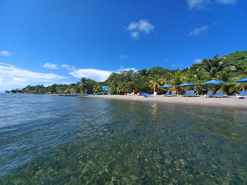
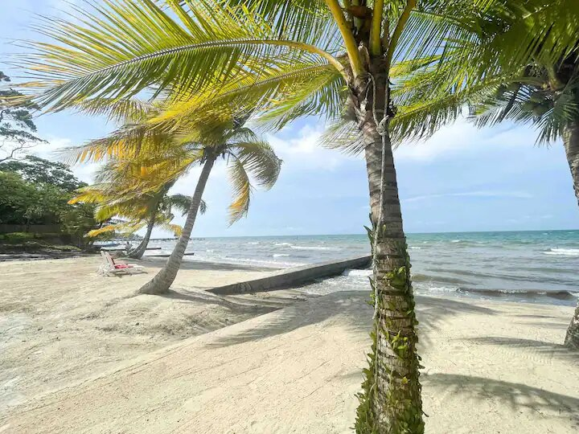

Punta de manabique Desde tiempos antiguos, la zona fue habitada por comunidades indígenas y grupos dedicados a la pesca y al comercio marítimo. Gracias a su ubicación cerca del Caribe, la región servía como punto de comunicación y navegación.
Punta de Manabique es una de las reservas naturales más importantes de Guatemala y una de las más biodiversas de toda Centroamérica. Esta península virgen alberga ecosistemas de manglar, arrecifes de coral, lagunas y playas deshabitadas donde la naturaleza reina en su estado más puro. Es el hogar del manatí, el cocodrilo y cientos de especies de aves migratorias.
Ecoturismo, observación de manatíes y cocodrilos, kayak por manglares, campamento ecológico.

